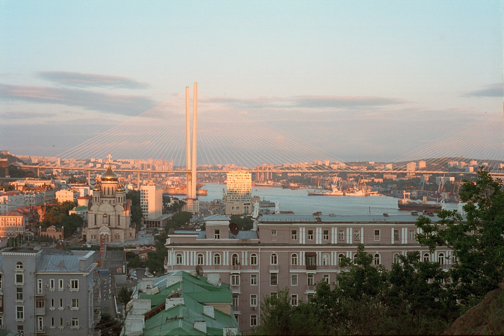

Мосты
Выезд на остров Русский по Русскому мосту и короткий взгляд на Золотой с видовой точки. История обоих сооружений — по дороге, не отдельной экскурсией на полдня.
День 01 из 10
День, в котором Владивосток читается сверху: два моста, университетский остров и самый большой океанариум страны. Вечер — в Zuma.
Выезд на остров Русский по Русскому мосту и короткий взгляд на Золотой с видовой точки. История обоих сооружений — по дороге, не отдельной экскурсией на полдня.
Прогулка по территории ДВФУ, затем основная часть дня в Приморском океанариуме на улице Академика Касьянова, 25.
Ужин в паназиатском ресторане Zuma: Партизанский проспект, 44в, второй этаж. Столик лучше держать заранее.
Золотой мост и Русский мост сданы в 2012 году к саммиту АТЭС. До Золотого моста берега бухты Золотой Рог связывали паромы и объезд. Русский мост перекинут через пролив Босфор Восточный: главный пролёт 1104 метра, пилоны около 321 метра. На момент открытия это был крупнейший вантовый пролёт в мире. Оба моста — не украшение открытки, а способ собрать город, который раньше жил кусками, разделёнными водой.
Остров Русский до саммита был в основном военной территорией. Кампус Дальневосточного федерального университета занял площадку, построенную для встреч глав экономик АТР. Университет собран в 2010 году из нескольких владивостокских вузов, а его родословная уходит к Восточному институту 1899 года. Прогулка по кампусу занимает час: корпуса, набережная, вид обратно на мост. Дольше задерживаться не нужно — впереди океанариум.
Приморский океанариум стоит на том же острове и относится к научному контуру Министерства науки и высшего образования. В экспозиции больше 500 видов и свыше 15 тысяч животных. Это не часовой аттракцион между двумя точками. Заложите на него день: главный резервуар, залы холодных и тёплых морей, морских млекопитающих. Билеты и сеансы смотрите на primocean.ru в утро выезда.
Zuma — владивостокский паназиатский ресторан, а не филиал лондонской сети с тем же именем. Он работает больше десяти лет, с 2023 года — в Novotel на Партизанском. Кухня собрана из моря региона: это логичный финал дня, который начался на мосту и прошёл среди аквариумов.
Назавтра город смотрят уже с земли. Мосты вы видели. Теперь — улица, вокзал и маяк, которые были здесь раньше них.
